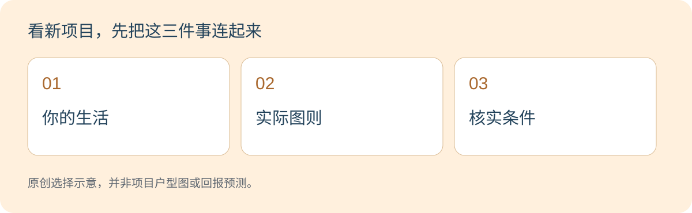

户型 · 生活 · 新项目
现在两个人住，JB三房新家可以怎样用？先替每个空间安排工作
Esther · Real Estate Negotiator · 核对 2026-11-02

三房的价值在于每个空间有实际用途，而不是房间数字越多越好。两个人住，也可能需要独立办公和家人留宿；但若多出的房长期闲置或增加负担，更紧凑的户型同样值得考虑。
查看本文重点
不要先问够不够大，先问三间分别做什么
可以先试一个假设分配：一间睡觉、一间日常办公、一间留给家人和弹性使用。这不是标准答案；若你不办公、家人也少来，就应重新安排，而不是为了三房而买三房。
本篇讨论三房内部怎样使用。若你正犹豫2+1与三房的房间条件，可接着读对应比较指南，不把书房名称当作正式卧室证明。

每天都用的空间，优先放进考虑
两个人同时开会、不同时间休息、孩子放学写功课，这些会决定房间位置和隔音需要。先把高频活动摆好，再安排一年偶尔用几次的功能。
备用房也能用作阅读或收纳，但要避免想象中一间房同时承担所有功能。摆进床后，工作桌、柜门和通道是否还能正常使用？
父母来住，需要的不只是一张床
家人夜间去洗手间的路线、私隐、行李摆放和日常动线都值得试一次。不要只凭房间数推论适合长辈；实际无障碍出入及个人需要要另外核对。
若计划未来有孩子，可以思考空间是否方便调整，但不必为了尚未确定的安排，把今天可承受的预算拉得太紧。

新项目图则看三项证据
第一看实际尺寸和门窗位置；第二看家具摆入后可否通行；第三看销售单位的交付规格。没有尺寸的彩图，不能代替空间核对。
也要将额外家具、空调配置和清洁维护放入安排。本文不提供固定面积门槛，不认定某种三房必定适合一家人。
把你的三房分工发来，再筛新盘
向Esther说清楚：三间房分别想做什么、谁每天使用、谁偶尔来住，以及愿意取舍的部分。这样更容易找到值得比较的图则。
最终仍要按最新可售单位、总预算和书面资料确认。三房是一个可能的方案，不是所有买家的升级标准。

常见问题
两个人买三房会不会浪费？
看使用频率及负担能力。办公、家人留宿有明确需要时值得比较；不需要的空间也会占用资金和维护时间。
第三间房可以同时当客房和书房吗？
可能，但要用家具尺寸和日常使用验证，不能只靠名称或示范摆设。
是不是越大越适合家庭？
不一定。动线、可用尺寸、生活位置和长期成本也会影响实际体验。
把三间房的用途告诉我，一起比较JB新盘户型
想了解更多，先告诉我用途、居住人数和想看的户型。我主要协助整理新项目选择；可售单位、规格、资料及看房时间须再确认。
了解更多 · WhatsApp Esther ↗WhatsApp: 011-3144 9616
可先修改消息，再自行发送；点击不会自动发消息或确认预约。来源与核对范围
资料核对：2026-11-02。生活比较和假设情境是编辑分析，不是市场调查数据；来源仅支持下列说明范围。
- KPKT — TEDUH housing information portal — 供买家查询适用住宅项目资料；不是本文户型比较或项目优惠的证明。
不承诺项目价格、融资批准、出租结果或升值；具体销售条款及允许用途须按项目核实。